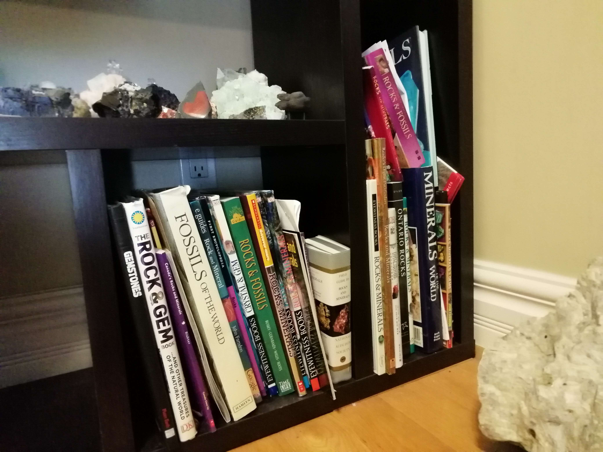
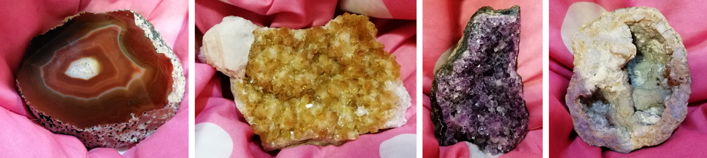
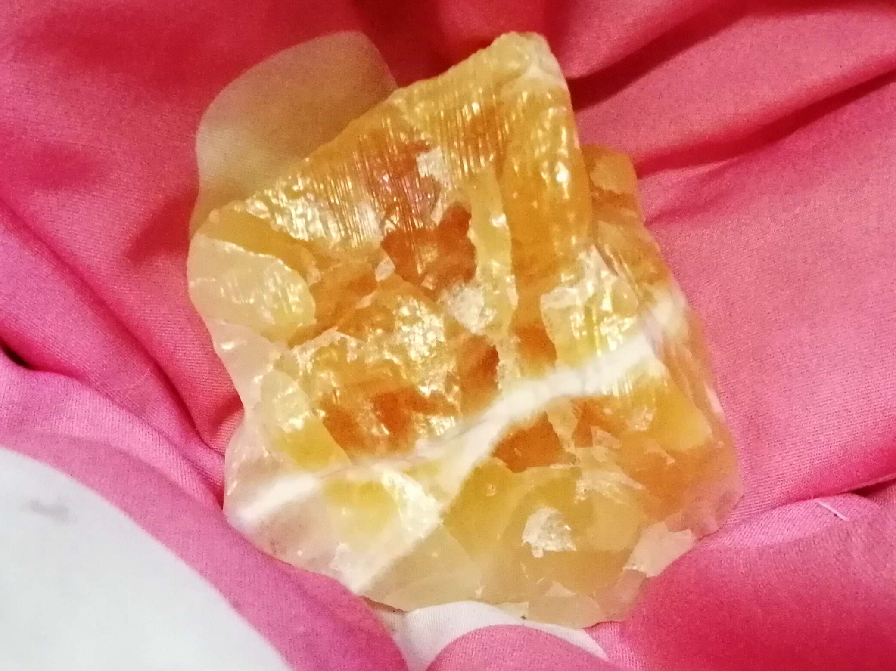
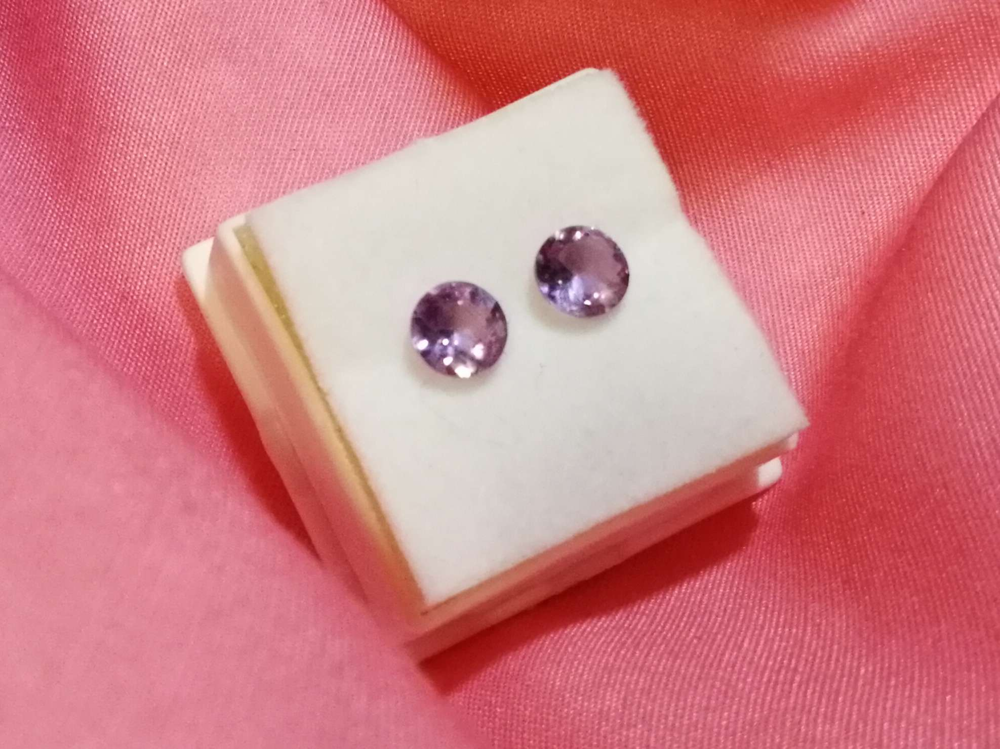

If you are looking to learn, books and research are crucial throughout your journey.
This webpage is directed towards beginners, so book suggestions will be fitting towards them:
♡ Field Guide to Rocks and Minerals by National Audubon Society
♡ Rocks, Minerals and Gems by John Farndon
♡ Canada's Rocks and Minerals by Joanne Richter
♡ The Rock & Gem Book and Other Treasures of the Natural World by Smithsonian
Additionally, here are some website recommendations:
Some vendors are also very popular and have affordable prices. My top recommendation is The
Gneiss Guy. They are well known, reliable, and have great quality specimens. This is a vendor
that has been passing their business down for many generations. If you are not looking to
travel abroad specifically to add to your collection, consider this vendor! They usually act
as a wholesaler, but they appear at virtually all major shows as well as have 2 warehouse sales
annually (open to the public). They have relations all over the world, so their prices are
super reasonable and their variety is unmatched in Canada.
Where can I Find Specimens?
Unless you are a diehard rockhound, the reality is that the majority of your specimens are
probably purchased at shows or something of the like. Some collectors that are in it for the
experience may have more to say on this topic, though I am not one of those. Despite this,
I can attest that Canada is very rich in variety of minerals as well as quantity. If you are
located within Canada, I recommend visiting the Mineral Capital of Canada, otherwise known as
Bancroft, Ontario. They hold annual “Rockhound Gemborees”, which is a huge rocks and minerals
show that attracts vendors and collectors all over Canada. Not only that, there are locations
within it where you can find nice Apatite, Rose Quartz, and a lot more.
If you are planning on travelling internationally in search of a collection upgrade, the best
starting points are in India and Madagascar. Both locations are known to produce huge and near
perfect crystals. For example, India is known for its Apophyllite and pink Stilbite. Madagascar
is known for its Malachite in addition to its fluorite. Fluorite, in case you haven’t drawn the
connection, is superbly fluorescent no matter the colour or structure. Overall, India and
Madagascar produce their goods in huge quantities with guaranteed low prices.
Storing Information

In order to store the research you have done or the books that you have bought, you should
consider placing them close to your collection. If you choose to store your collection on a
shelf, perhaps you can leave a space specifically for related books. If you have done research
online, perhaps you can save all the information in one file so that it is easily accessible.
To record your progress or review knowledge that you have collected over time, you can document
it in a personal journal or even create videos/content so that you can look back on how you were
in the past. A bonus for the last storage method is that you can even share your knowledge with
others! Perhaps you can be the reason someone started their rocks and minerals collection!
Useful Information for Starters
I am going to conveniently sort our a couple examples of minerals that beginners and
intermediates respectively can consider collecting. This is for convenience in case you do
not know where to start or whether or not you are getting your money's worth. In this circuit,
it's very easy to be scammed by vendors who are seeking more than they should and are banking
off of your obliviousness. I can attest that it is very easy to fall into these traps, since
I have had past experience (though it was easily avoidable).
Beginner Mineral #1: Quartz
Quartz is everywhere. It’s the most common mineral found on the crust of earth. Quartz is
in gravel, in sand, and in rocks like granite. It’s used industrially and commercially. The
difference is that most rockhounds seek quartz’s various properties that make it unique as
well as comparatively affordable. It ranks at 7-7.5 on the Mohs Scale, meaning that it is
durable and easy to store. If you drop it on a wooden floor, it most likely will not break. There
is also plenty of variety. Quartz comes in various sizes, shapes, as well as colours. The
cause for this is due to impurities of all sorts. For example, Amethyst has iron impurities
that give it a purple colour.

Beginner Mineral #2: Calcite

Calcite comes in just as many varieties and colours as quartz, if not more. As you can see
with the Calcite pictured on the right, it can have splendid colouring, though this depends
on the location for which it was found. Not only that, Calcite can form many crystal structures.
Notable forms include Dogtooth Calcite and Iceland Spar. The reason they are classified as
beginner friendly is because of their abundance and affordability. Unfortunately, in comparison
to Quartz, finding gem quality Calcite is much rarer, meaning that it costs a little more. It
is also relatively soft at 3 on the Mohs Scale, which can make it harder to sustain and not
ideal as jewellery.
Intermediate Mineral #1: Fluorescent Minerals
Fluorescent minerals are minerals whose electrons get excited when an ultraviolet light is
shined at them. The electrons temporarily jump up and go into a higher orbit. Particles are
activated to the extent of which they emit a visible glow. Different elements emit different
colours due to their chemical properties. The reason this group of minerals have been classified
as “intermediate” is because they are harder to obtain and handle. At shows, they are more
expensive because this special property is not common. Not only that, to see the true extent
of their glory, you have to have an ultraviolet light (ideally long wave) on hand. Examples
include Scapolite, Mangano Calcite, Ruby and Hackmanite.
Intermediate Mineral #2: Gems/Faceted Minerals

To be completely honest, most collectors of minerals are not active seekers of these. This is
because over time, you’ll realize that the beauty of many minerals is their crystal structure
and natural appearance. Minerals have their own distinctive crystal shapes and properties that
make them unique. The reason faceted minerals are considered intermediate is because not only
are they expensive due to the labour put into them, they can be limited in terms of what is
actually sustainable. Minerals like Cerussite cannot be worn as daily wear in jewellery because
it is so fragile and can easily shatter upon contact. They can only be kept in careful
maintenance, ideally in cases. An example of Cerussite as a gem is the Royal Ontario Museum’s
“Light of the Desert”.
 Unless you are a diehard rockhound, the reality is that the majority of your specimens are
probably purchased at shows or something of the like. Some collectors that are in it for the
experience may have more to say on this topic, though I am not one of those. Despite this,
I can attest that Canada is very rich in variety of minerals as well as quantity. If you are
located within Canada, I recommend visiting the Mineral Capital of Canada, otherwise known as
Bancroft, Ontario. They hold annual “Rockhound Gemborees”, which is a huge rocks and minerals
show that attracts vendors and collectors all over Canada. Not only that, there are locations
within it where you can find nice Apatite, Rose Quartz, and a lot more.
Unless you are a diehard rockhound, the reality is that the majority of your specimens are
probably purchased at shows or something of the like. Some collectors that are in it for the
experience may have more to say on this topic, though I am not one of those. Despite this,
I can attest that Canada is very rich in variety of minerals as well as quantity. If you are
located within Canada, I recommend visiting the Mineral Capital of Canada, otherwise known as
Bancroft, Ontario. They hold annual “Rockhound Gemborees”, which is a huge rocks and minerals
show that attracts vendors and collectors all over Canada. Not only that, there are locations
within it where you can find nice Apatite, Rose Quartz, and a lot more.